Gobi 65
Gobi, but make it crunchy, red-hot and impossible to share.
The District Menu
Eight flavor streets, one very hungry map. Start in Starters Square, swing through the Tandoor Quarter, cruise Biryani Boulevard and save room for Sweet Street. Tell us your heat level when you order; second helpings are strongly encouraged.
Lunch from 11 AM · dinner from 4:30 PM
Hours as listed publicly. Call to confirm on holidays.
Try another filter, or just go with the butter chicken. It’s a safe bet.
Street 01 / 08
Crunch first, ask questions later.
17 dishes
Gobi, but make it crunchy, red-hot and impossible to share.
Crunchy gobi, sticky chilli sauce, zero regrets. Chalo!
Crackly, golden, veggie-packed. Dip, crunch, repeat!
Baby corn, big attitude. Tangy, spicy, ekdum crunchy.
Red-hot, crunchy, ridiculously poppable. The starter that starts arguments.

65 was great. 555 turned the volume up.
Karam means spicy. Podi means powder. You do the maths.
Andhra chicken fry with serious heat. Keep the buttermilk close!
Black pepper, bone-in goat, big flavour. Pure masaledaar magic.
Crispy fish meets zingy ginger. A wok-tossed love story.
Crunchy, tangy, fiery fish. Houston, we have flavour.
Juicy shrimp, sticky chilli sauce, wok-fire swagger.
Three crunchy triangles of aloo-matar joy. Sharing is optional.
Rainy day? Sunny day? Pakora day, every day.
A warm tomato hug in a bowl. Garma-garam goodness.
Hot? Yes. Sour? Yes. Slurp-worthy? Obviously.
Slow-cooked, soul-warming paya. Sip it like a pro.
Street 02 / 08
Clay oven, big smoke, bigger flavour.
5 dishes
Smoky, red, clay-oven legend. Six pieces of pure tandoor swag.

Seven fiery, charred bites of tikka. Fair warning: they bring heat.
Creamy, dreamy, smoky chicken. The chill one in the tandoor gang.
Paneer with char marks and a spicy attitude. Veg goes vroom!

Soft, creamy, smoky paneer. Mild-mannered, massively tasty.
Street 03 / 08
From butter-mellow to Andhra-fire. Pick your gravy!
36 dishes
So good it needs its own zip code. Creamy, buttery, legendary.

Smoky tikka, saucy masala, total crowd-pleaser. Naan on standby!
Fiery, tangy, totally fearless. Vindaloo is not a drill!
Humble dal, loud thadaka. Pour it over rice and smile.

Buttery, creamy, slow-cooked dal. Basically a warm hug, makhani-style.
Chickpeas with chatpata swagger. Grab a naan and go!
Green, creamy, paneer-packed. Your veggie MVP, no contest.
Smoky paneer swimming in masala. Naan dunk = mandatory.
Butter chicken's veggie twin. Equally rich, equally addictive.
Shahi means royal, and this paneer acts like it.
Paneer, peppers and onions in a punchy kadai masala. Chunky and cheerful!
Creamy paneer for the 'not too spicy, please' crew.
Paneer + puffy lotus seeds = texture party in a bowl.
Lotus seeds in a creamy curry? Trust us. Unexpectedly addictive.
All the veggies, one kadai, big masala energy.
Aloo and gobi, the ultimate power couple. Masaledaar to the max.
Mild, creamy, cosy. Korma is the comfy sweater of curries.
Golden kofta balls taking a creamy bubble bath. Yes please!
Creamy, peppery, totally chill paneer. Mild never tasted this good.
Chicken, peppers, punchy kadai masala. Big, bold, bowl-licking good.
The OG. Chicken, gravy, rice. No notes.
Peppery, roasty, bold. Chettinad heat that sneaks up. Ready?
Chicken meets silky saag. Greens never looked so good.
Creamy, peppery, mellow chicken. The smooth operator of the menu.
Slow-cooked goat, rich gravy. Grab rice. Grab naan. Grab both.
Andhra-level heat. Goat-level flavour. Buttermilk on standby!
Goat, peppers, kadai masala. Chunky, rustic, seriously satisfying.
Goat + vindaloo = maximum masala mode. Brave souls only!
Goat in mellow, creamy kurma. Comfort food, upgraded.
Goat meets Chettinad pepper punch. Bring your A-game.
Red, rich and rogan-ready. Goat curry with main-character energy.
Tender lamb, rich gravy, happy you. Simple as that.
Lamb with Andhra fire. Sweat a little, smile a lot.
Creamy, mellow, melt-in-your-mouth lamb. Kurma comfort mode: on.
Lamb vindaloo: hot, tangy, unforgettable. Mild people, look away!
Lamb, peppers, kadai masala. Chunky, punchy, proper feast.
Street 04 / 08
Lift the lid. Inhale. Repeat.
15 dishes
The big boss of Biryani Boulevard. Lift the lid, inhale, swoon.

Chicken 65 crashed the biryani party. Best gatecrasher ever.
Proof that veggies can party. Fluffy, spiced, layered with love.
Gongura brings the tang, biryani brings the swag. Andhra-style dhamaka!
Paneer cubes in every bite. Veggies, you've won today.
Eggs-actly what you were craving. Masala eggs, fluffy rice.
All the biryani, none of the bones. Dig in, yaar!
Weekend-only goat biryani. Plan your Saturday around it. Seriously.
Shrimp, masala, basmati. Arre wah, kya baat hai!
Fried chicken meets fragrant pulav. Comfort food, full power!
Goat fry on a mountain of pulav. Weekend mood, any day.
Kodi means chicken. This pulav means business. Rich, spicy, unforgettable.
Tangy gongura, tender mutton, fragrant pulav. Ekdum zabardast!
Fluffy basmati: the curry's best friend.
Shrimp + pulav = happy plate, happier you.
Street 05 / 08
Wok-hot, chilli-sticky street-food swagger.
8 dishes
The Indo-Chinese icon. Crunchy gobi, saucy swagger, total crowd magnet.
Paneer goes street-style: wok-tossed, chilli-slicked, seriously snackable.
Wok-hot, chilli-sticky, garlic-loud. Indo-Chinese at full volume!
Slurpy, wok-tossed noodles loaded with veggies. Twirl responsibly.
Noodles + chicken + wok fire = your new comfort food.
Fluffy, smoky, wok-tossed rice. The ultimate sidekick.
Chicken, rice, wok fire. Simple maths, serious satisfaction.
Crispy chicken drenched in tangy Manchurian sauce. Rice not optional.
Street 06 / 08
Bas, ek aur naan.
4 dishes
Bas, ek aur naan. Okay, ek aur. Garlicky, blistered, addictive.
Soft, buttery, pull-apart perfection. Curry's favourite scoop.
The OG scooper. Soft, puffy, ready for gravy duty.
Whole-wheat, soft and everyday-easy. Roti, sabzi, done!
Street 07 / 08
Save room. Seriously.
8 dishes
Syrupy, squishy, golden-brown happiness. Meetha moment unlocked!
Soft, spongy, milky magic. Thanda, meetha, perfect.
Carrots, but make it dessert. Gajar halwa, ekdum mast!
Creamy rice pudding, desi-style. Spoon in, stress out.
Cool down that chilli heat. Ask what flavours we've got!
Gulab jamun in a rabidi bath. Double the sweet, double the joy!
Gulab jamun's darker, richer sibling. Kala means black. Also: delicious.
Apricots in dessert mode. Fruity, sweet, ekdum delightful.
Street 08 / 08
Chai-lo! Plus lassis, shakes and coolers.
8 dishes
Thandi, creamy, mango-y. Your chilli-fire extinguisher.
Cool, sweet, frothy lassi. Sip, sigh, repeat.
Mango + milk + chill = instant summer, all year.
Chikku: tastes like brown sugar grew on a tree. Shake it!
Custard apple in a glass. Creamy, dreamy, desi-delicious.
Badam = almond. Milk = yes. Sweet, nutty, totally sippable.
Tangy, savoury, ice-cool. The desi way to chill after spice.
Chai-lo! Garam chai, good gossip, zero rush.
Tell us about any allergies when you order — our kitchen handles nuts, dairy, gluten, shellfish and eggs, so we can't promise an allergen-free dish.
Spice levels are our estimates of each dish as usually made. Many dishes can be ordered mild, medium or spicy, so just ask.
Not spicyMildMediumHotDistrict Hot
Diet marks reflect how each dish is usually made and are pending kitchen confirmation.
VegetarianNon-vegetarianContains egg
Menu shown is a design concept built from public listings; dishes, spice levels and prices to be synced with the live menu. No prices are shown until the live menu is confirmed.